# 当2023走向尽头
# 按
我梦见，我微醉，我沉睡。我仍在等待谁，指望谁，成为谁。
2021年初惊魂的梦魇，如回旋镖般插在了2023年末的我的背后。曾经梦魇中的一切已经从我的脑海彻底散去，而曾经的现实渐渐变成了梦魇，成为我午夜里光怪陆离的一部分。
过去，现在，未来。
错乱的记忆交织着虚拟和现实，渐渐也就不分虚拟，无论现实。生活在现实的虚拟，观看着虚拟的现实。是你是我，是我是你。不明觉厉，如梦似醒。
# 始于隆冬的酷热
关于2023的一切，大约应当从前一年的冬至前夕算起。抗争了三年的白色洪流终究顶不住潮水般泛滥的无形恶魔，而放任其在这片大陆上扩散、蔓延。酷热、昏沉、软弱无力，是属于每一个受害者的苦难。而年终的交付压力，则是另外的一种雪上加霜。对我很好的领导很突然的选择了离开，而这个时候的我却还没有意识到这意味着什么。
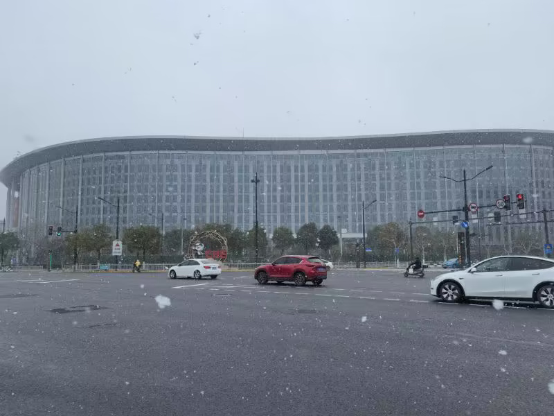 2023.1.15 上海大雪
随后的日子，便是种种无聊的拉扯。需求与进度、人员与归属，也包括情感与未来。新的主管对混乱的开发过程一片茫然，在脑洞的驱使下为项目增加了若干的麻烦。深圳和上海的地域矛盾，使得我的人员管理问题也变得棘手了起来。漫长而看不到未来的拉扯，让我的情感也逐渐步入寒冷，就好像1月中旬上海的那一场大雪。一切结束的顺理成章，就像一根拉扯了太久的弦，轻轻一碰便断了连接。
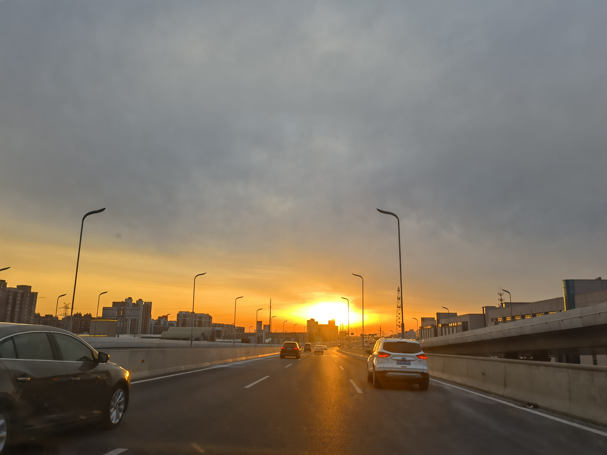 2023.1.25 扬州
但随着时间的推进，我发现我断开的不仅是情感的连接，更是与现实世界的连接。无形恶魔给我留下的心率问题从此徘徊萦绕，在我的身体之中挥之不去。但总而言之，随着白色恐怖的过去，市面上渐渐也有了熙攘的人流。一切，仿佛在向着好的方向变化。
 2023.2.5 上海豫园
2023.2.5 上海豫园
# 虚拟之城的春天
当气温一步步走向回暖，上海开始迎来新一年的春天。尽管北方的寒风仍不时洗礼东海之滨，但属于春天的花已经开始渐渐绽放。随着残存的管制措施消散，我们迎来了三年以来第一段完完全全自由自在的时光。
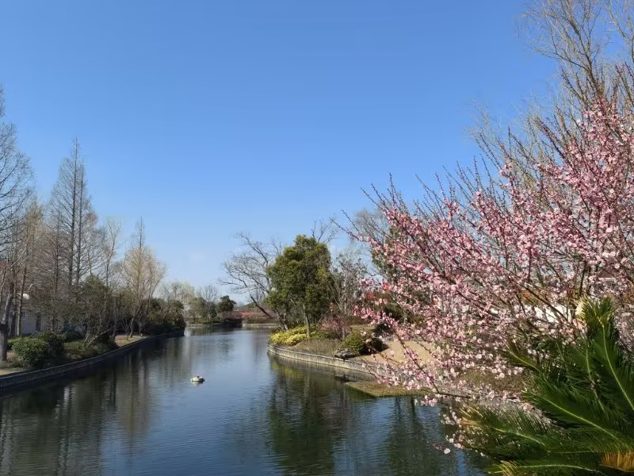 2023.2.26 上海横沙岛
第一批号称全国产的芯片终于完成了芯片回片，来到海思半年以来的成果即将揭晓。时隔四个多月再次来到南国海滨，却仿佛来到的不是同一个城市。穿过福田口岸漫长的走廊，踏进所谓的资本主义世界，维港的风并不比深圳湾更新鲜。
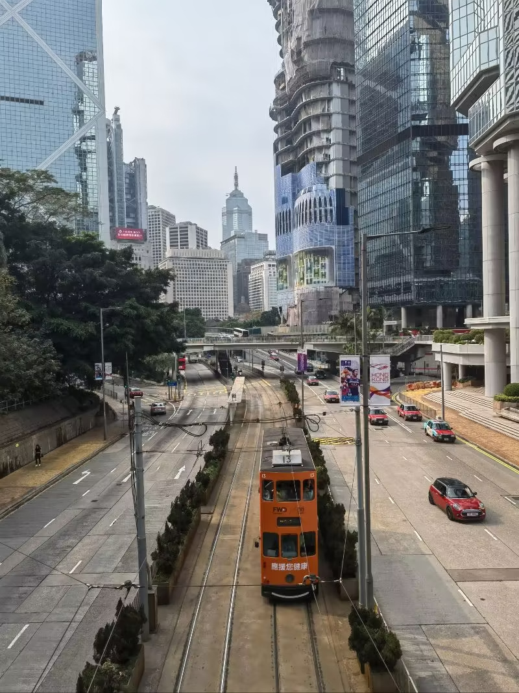 2023.3.12 香港皇后大道东
穿梭时间的画面的钟，从反方向开始移动。回到当初的牛头冲，回到熟悉的406，却觉得一切足够的陌生。大家都找到了各自未来的归宿，却只有我陷在迷茫之中。大抵也正是由此，我堕入了管人痴的深渊，并再也没能爬的出来。故乡的sakura开了，莲大佐还会回来吗？
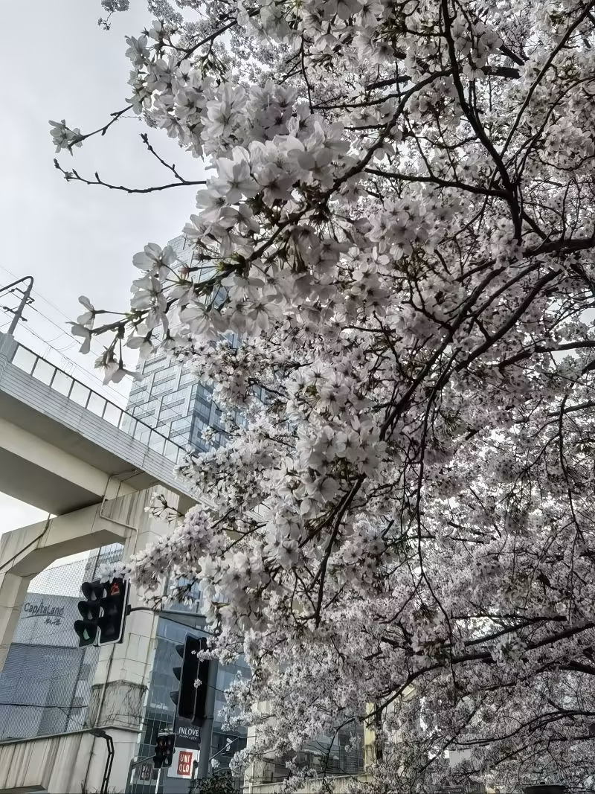 2023.3.26 上海江湾体育场
上一次去往帝都已经是五年之前了，但京城依然是我记忆里的那幅模样。行走京西，出左安门而往玉渊潭，入雍和宫而向国博馆。颐和园四望，于学院路见数位老友。读研有读研的烦扰，而工作亦有工作的困顿。躺平之心渐起，进而一发不可收拾。深圳与上海的地域矛盾似乎有了眉目，我短暂的嵌入式之旅似乎又一次要结束了。
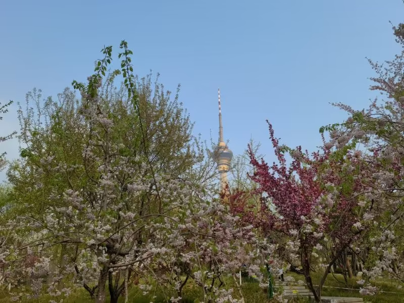 2023.4.1 北京玉渊潭
# 当夏天渐渐来临
暗流总是在平静的水面之下涌动，这是对四月最好的注释。当我还在为一个毫无意义的需求推诿扯皮时，来自上层的压力给本就僵化的上海团队带来若干微妙的转变。大家都在等待着一个夏天的降临，而原本暗藏水下的东西，则会在这个夏天浮出水面。
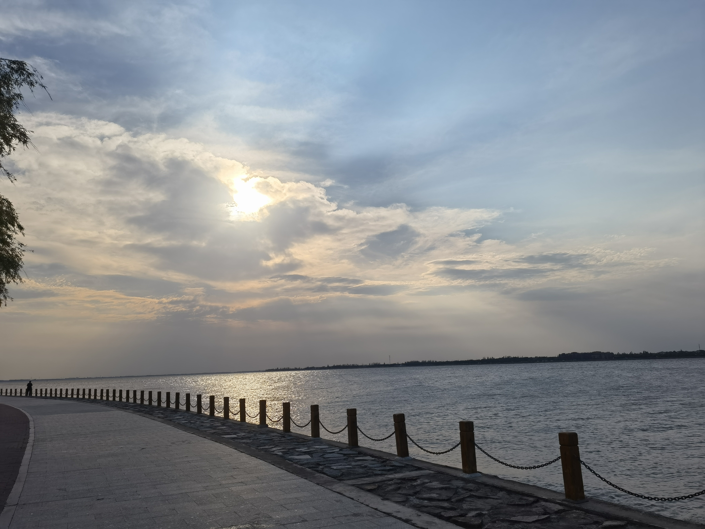 2023.5.2 上海淀山湖
关于上海团队的人事变动在五一之后逐渐摆在了明面上。领导换人，同事劝退，我接烂活。这显然说不上什么好事，但尘埃落定起码在此时反而算不上一件坏事。奖金不是很好看，但是也算能接受的水平。但我总觉得，事情不会这么简单，而我在海思的生涯，大抵也不久了。
2023.5.14 滴水湖
艰难的完成了工作交接，等待我的是更艰难的业务磨合与探索。编译器的艰深程度，虽然我没有直观的领会过，但总归有所耳闻。开发举步维艰，方案举棋不定，每天的工作就剩下无数奇奇怪怪的实验。服务器跳跃红字，单板又再次挂死，当前版本的合入已经截止。那么，延期，延期，继续延期，反正又不是没延期过。
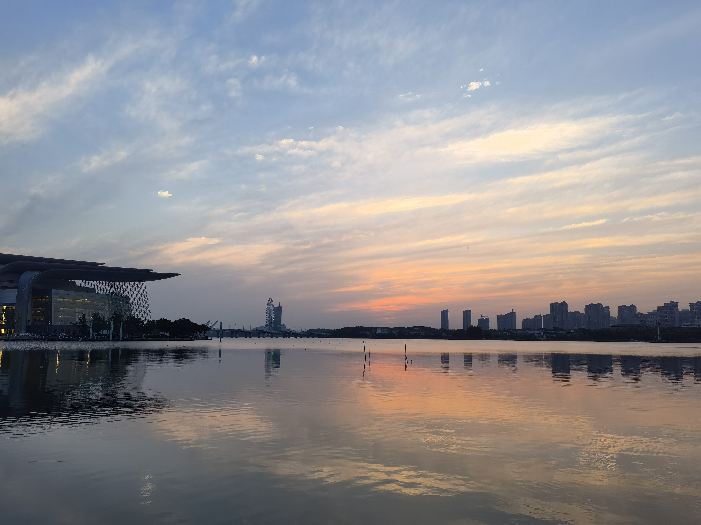 2023.5.20 无锡蠡湖
而随着暑气渐进，一部分牛头冲民也来到了他们的最后一个月。最后一次迈进406的大门，看远方的WDR战队打出成立以来的第一个胜场。我与现实的脆弱连接，自此彻底画上了句点。大海有自己的语言，风也是。于是我放弃了我使用了若干年的ID，改名海语西风。
2023.6.10 温岭石塘
# 梦境中向阳而生
当夏夜遇上晚风，落霞变幻星空，又到一年的当中。任心绪自在朦胧，昔日温情入梦，前程如风雨飘动。这个夏天似乎并没有什么太多值得回忆的东西，脑海里只剩下加班、扯皮以及四处飘荡。去过渤海的海滨，看过东海的烟云。我逐渐熟悉了这样完全自我的生活，适应了不入凡尘的自在。
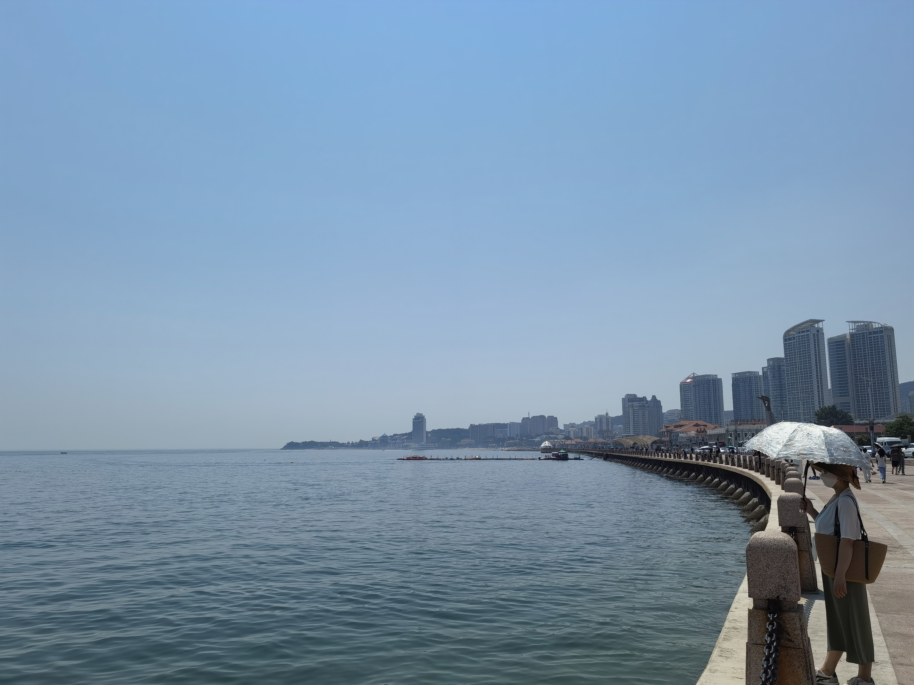 2023.6.23 烟台
但一个人的旅途终究会走向厌倦，别人的关心也成为自己内心的枷锁。越来越多的旅程始于头脑发热，终于虎头蛇尾。渡船越过东海南下舟山，列车划破黑夜直通江汉。但终究哪也没去，无处可去。在上海待的越久，却越心向姑苏。漫步古镇小桥、山塘街口、太湖之滨，反而获得些许内心的安宁。
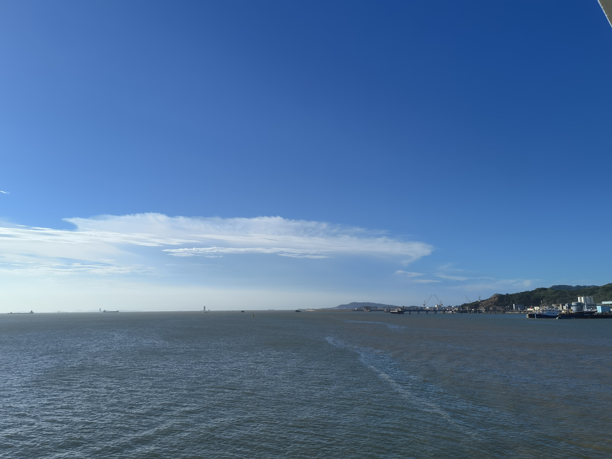 2023.7.15 舟山嵊泗海面
终端的王者归来十分突兀，却又让小海思本就尴尬的局面进一步走向了绝路。低制程的突破一下子显得无足轻重了起来，小海思的研发也就显得毫无意义。而我的工作，则是这个团队里最无意义的一个。微不足道的用户体验改进，带来十分明显的性能下降，不论从哪里看都不是一个划算的买卖。
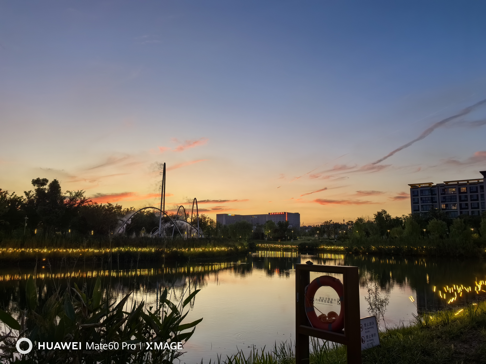 2023.9.1 上海蟠龙天地
让不愉快的一切在这个夏天终结，愿风雨之后能够重见晚霞的绚烂，愿前途有光，岁月善良。迈入23岁，终于开始与自己和解。回去吧，虽然称不上是什么港湾，但总归比上海更像是一个好的居留地。关于嵌入式高级工程师的理想终究破灭，还是回归安全工程师的赛道更适合我这种学历低下的人。虽然说起来AI似乎没什么学历歧视，但是我还是能明显感受到我的愚钝。再见，海思。
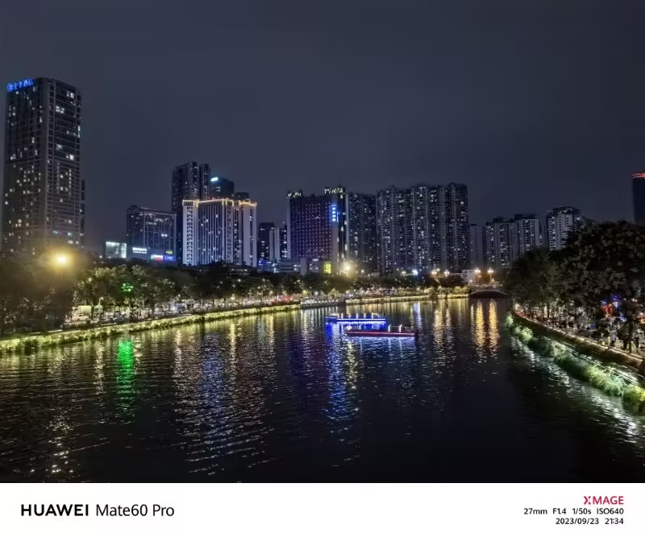 2023.9.23 成都九眼桥
# 终究如镜花水月
十月的南国依然温暖，在大鹏英管岭的山尖，南澳半岛尽收眼底。我想住这么一套房子，背山面海，春暖花开。整日的住在里面，做些自己喜欢的事情，运营一些开源项目，写写文章或者作品，或者看看能不能做一些有意思的视频，甚至说套个皮当v出道。逃避现实，逃避工作，逃避社交，逃避人群。但我并没有这样的能力，因此我依然不得不工作，不得不面对惨淡的现实。
2023.10.13 深圳大鹏南澳英管岭
中东的战火掩盖了俄乌的喧嚣，而新闻中的大人物接二连三薨逝。2023注定不是一个安生的年份，是上一个好时代的彻底结束，也是下一个大时代的序幕拉开。大盘在三千点上起起落落，似乎也昭示着这场角力的拉扯。大洋彼岸的两方，即将走向他们的决战时刻。身处这一场战火的中心，我无可躲藏，那不如站在网络安全的前线，去看看大洋彼岸无声的硝烟。
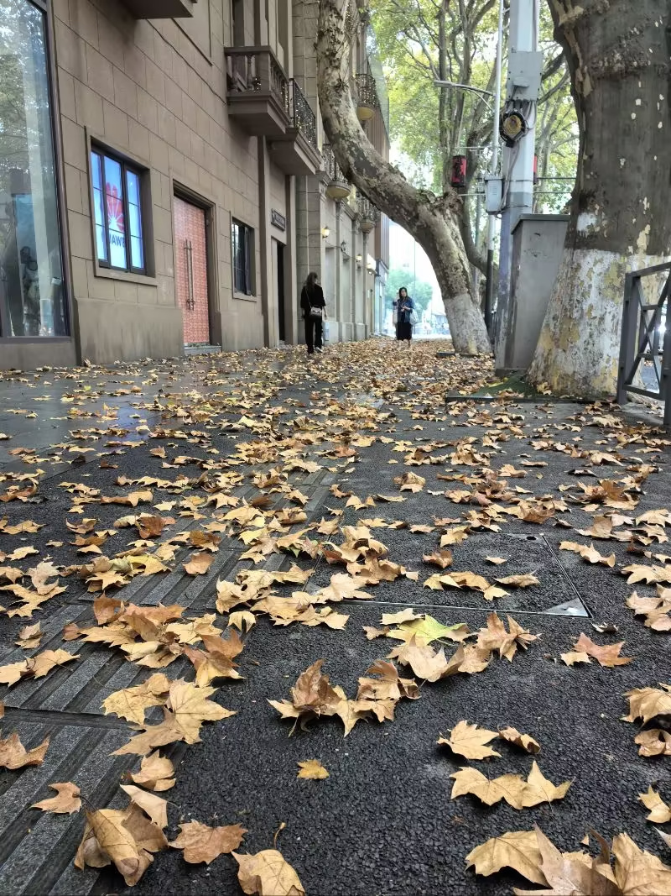 2023.11.5 南京建康路
离开海思以后的生活闲适了许多，更多时候接近于一种无所事事的自我放逐。同来的同事仍在致力于补全前部门留下的遗憾，而我所期许的则是这里恍惚406般的自由。无论有什么期许，亦或者是能力精进与情感寄托，都是不属于眼下的未来范畴。406已经不再，但406所意味着的一切，他仍在那里，不曾改变。
2023.12.2 苏州光福石壁永慧禅寺-太湖渔港村
# 尾声
如果我选择回到过去，我还是会走上这么条明明白白的错误道路。因为在没有真正撞上那堵墙之前，我不会认可我能力所存在的边界，也不会明白自己的舒适区到底到哪里为止。这便是这个即将过去的2023所带给过我最大的收获。
如果说还有什么别的，那么，
珍惜你所遇到的每一个人，珍惜ta与你相处的每一分每一秒。也许不知道什么时候，或许只是一个普普通通的午后，你们各自道了一句珍重，然后就消失在人海茫茫。
In case I don't see you again, 祝你早安、午安、晚安。